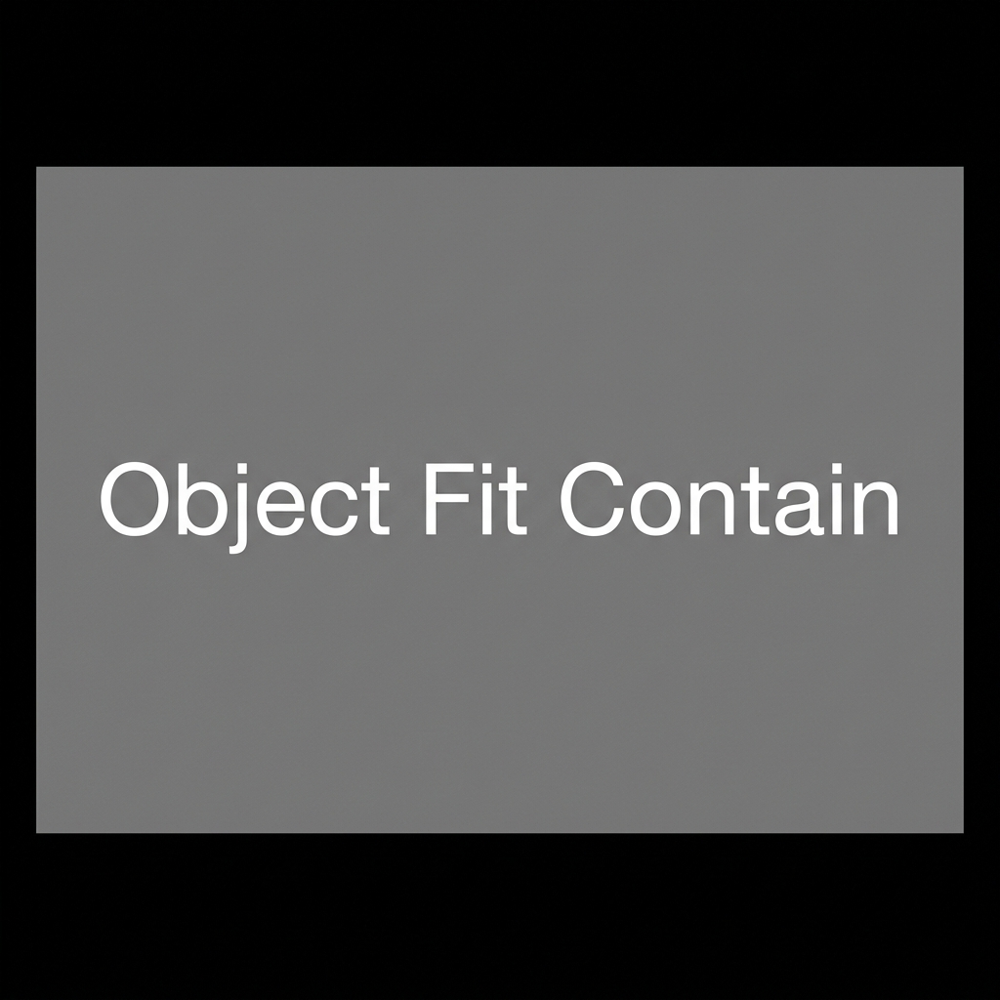
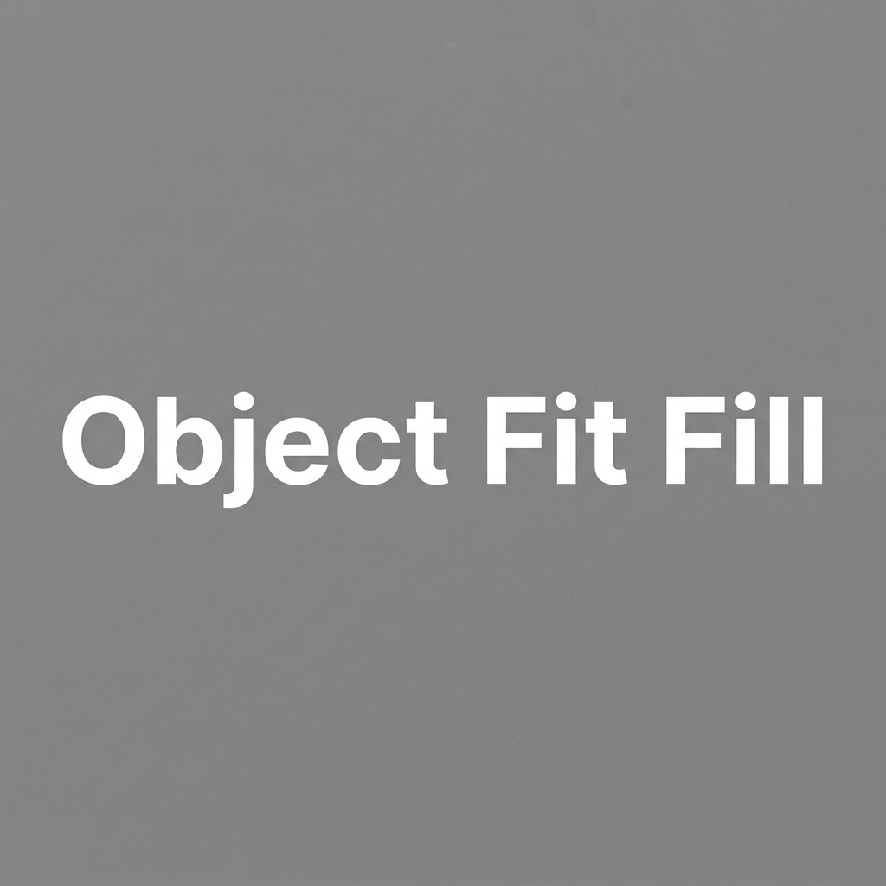
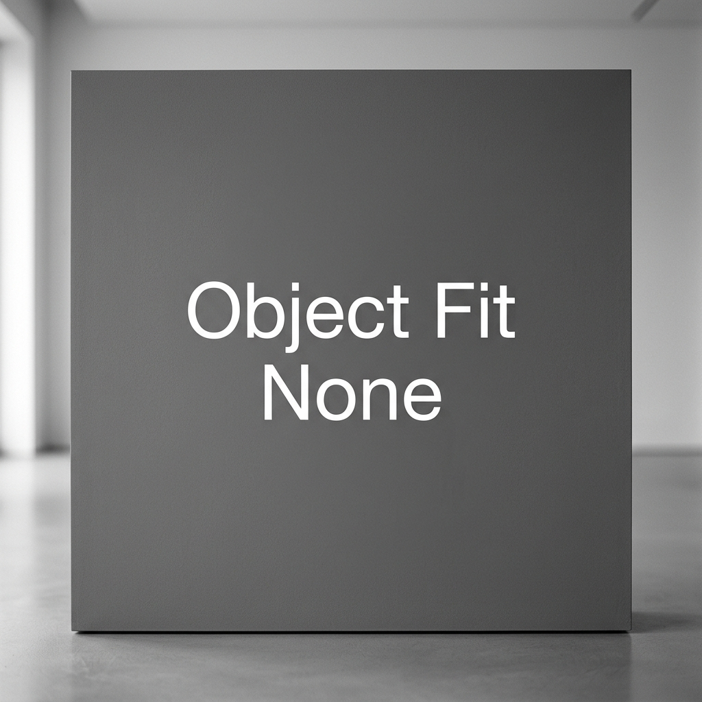
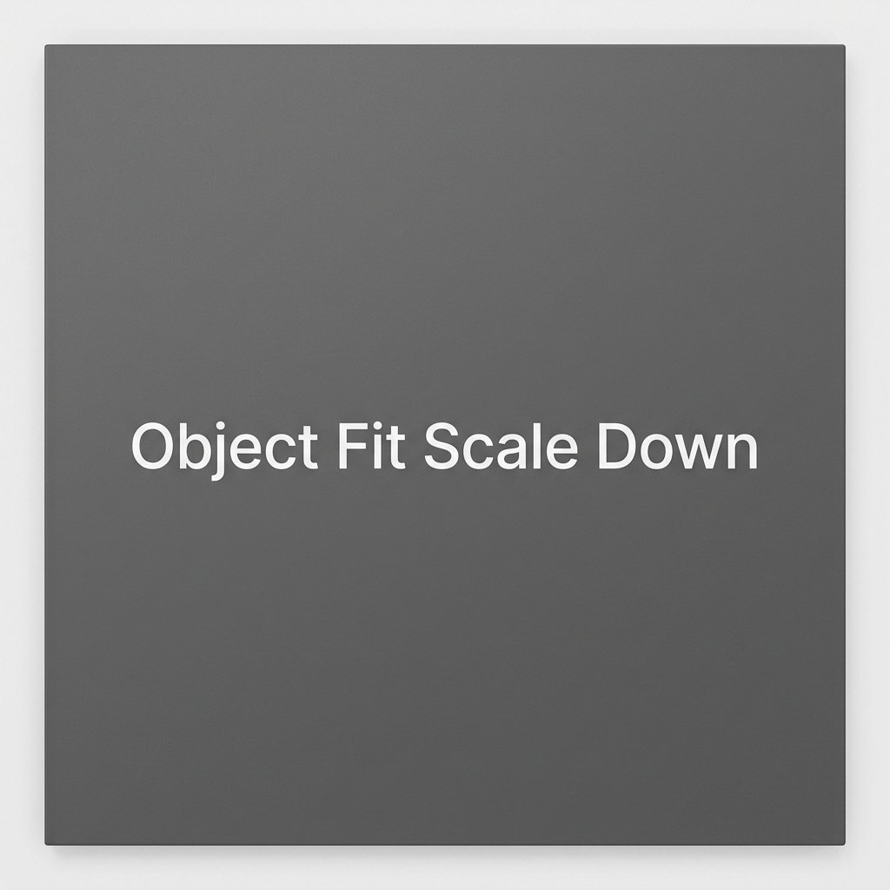

Responsive structural utilities including Breakpoints, Containers, and Grid systems.
Containers are a fundamental building block of UX4G that contain, pad, and align your content within a given device or viewport.
Responsive fixed-width container.
Always full width (100%).
100% width until small breakpoint, then fixed.
100% width until medium breakpoint, then fixed.
100% width until large breakpoint, then fixed.
100% width until extra-large breakpoint, then fixed.
100% width until extra-extra-large breakpoint, then fixed.
Multiple ways to achieve perfectly centered layouts in the UX4G Design System.
Uses ux4g-container to center content based on current breakpoint width.
Uses ux4g-mx-auto to center fixed-width elements horizontally.
Uses jc-center and ai-center for both horizontal and vertical alignment.
<!-- 1. Container -->
<div class="ux4g-container">...</div>
<!-- 2. Margin Auto -->
<div class="ux4g-mx-auto ux4g-w-50">...</div>
<!-- 3. Flex Center -->
<div class="ux4g-d-flex ux4g-jc-center ux4g-ai-center">...</div>
The UX4G Grid System provides a flexible, 12-column responsive layout based on CSS Grid. It includes utilities for columns, rows, automatic sizing, and item alignment.
Initiate a grid layout using the ux4g-grid class.
<div class="ux4g-grid ux4g-grid-cols-3 ux4g-gap-m">
<div>1</div>
<div>2</div>
<div>3</div>
</div>
Define the number of columns using ux4g-grid-cols-{n} where {n} is 1 through 12.
4 Columns (.ux4g-grid-cols-4)
12 Columns (.ux4g-grid-cols-12)
<!-- 4 Columns -->
<div class="ux4g-grid ux4g-grid-cols-4 ux4g-gap-m">...</div>
<!-- 12 Columns -->
<div class="ux4g-grid ux4g-grid-cols-12 ux4g-gap-s">...</div>
Define static grid rows using ux4g-grid-rows-{n}.
<div class="ux4g-grid ux4g-grid-rows-3 ux4g-grid-cols-2 ux4g-gap-m">...</div>
Control the size of implicit rows using ux4g-auto-rows-{auto|min|max|fr}.
<div class="ux4g-grid ux4g-grid-cols-2 ux4g-auto-rows-max ux4g-gap-m">...</div>
Combine column and row spans using ux4g-span-{n} and ux4g-row-span-{n}.
<div class="ux4g-span-2">Span 2 Cols</div>
<div class="ux4g-row-span-2">Span 2 Rows</div>
Align items globally within the grid container using ux4g-place-items-{center|start|end}.
<div class="ux4g-grid ux4g-place-items-center">...</div>
Create fully responsive masonry-style grids using ux4g-grid-auto-fit-{width}. Items will automatically wrap as space decreases.
Responsive Auto-fit (.ux4g-grid-auto-fit-250)
Resizes automatically
Resizes automatically
Resizes automatically
<div class="ux4g-grid ux4g-grid-auto-fit-250 ux4g-gap-m">...</div>
<!-- 1. Grid Base -->
<div class="ux4g-grid ux4g-grid-cols-3 ux4g-gap-m">...</div>
<!-- 2. Columns & Spans -->
<div class="ux4g-span-2">...</div>
<!-- 3. Auto Fit (Responsive) -->
<div class="ux4g-grid ux4g-grid-auto-fit-250">...</div>
A traditional 12-column layout system built with Flexbox. It supports auto-layout, column wrapping, offsets, and row-based column sizing.
Use ux4g-row as a container and ux4g-col-{n} for variable widths.
<div class="ux4g-row">
<div class="ux4g-col-4">...</div>
<div class="ux4g-col-8">...</div>
</div>
Use ux4g-col to evenly distribute space or ux4g-col-auto to fit content.
<div class="ux4g-col">...</div> <!-- Equal width -->
<div class="ux4g-col-auto">...</div> <!-- Content width -->
Move columns to the right using ux4g-offset-{n}.
<div class="ux4g-col-4 ux4g-offset-4">...</div>
Control number of items per row globally using ux4g-row-cols-{n}.
<div class="ux4g-row ux4g-row-cols-3">...</div>
Comprehensive set of border utility classes including width, radius, color, and side-specific variations.
Basic Borders
Button Border Radius
Border Style Variations
<!-- Basic Borders -->
<div class="ux4g-border">...</div>
<div class="ux4g-border-bold">...</div>
<!-- Radius Variants -->
<div class="ux4g-radius-l">...</div>
<div class="ux4g-radius-top-full">...</div>
<!-- Border Colors -->
<div class="ux4g-border ux4g-border-primary">...</div>
A complete set of background color utilities for surfaces, containers, and status-based components.
<!-- Surface Backgrounds -->
<div class="ux4g-bg-neutral">...</div>
<div class="ux4g-bg-neutral-subtle">...</div>
<!-- Brand Backgrounds -->
<div class="ux4g-bg-primary">...</div>
<div class="ux4g-bg-primary-soft">...</div>
<!-- Status Backgrounds -->
<div class="ux4g-bg-success-soft">...</div>
<div class="ux4g-bg-error-emphasis">...</div>
Typography color utilities for standardizing text content and interactive links.
<!-- Neutral Text -->
<div class="ux4g-text-neutral-primary">...</div>
<div class="ux4g-text-neutral-secondary">...</div>
<!-- Status Text -->
<div class="ux4g-text-error">...</div>
<div class="ux4g-text-success">...</div>
<!-- Links -->
<a href="#" class="ux4g-text-link">...</a>
Utilities for configuring the positioning behavior of elements, particularly useful for headers, footers, and sticky components.
Scroll down to see the sticky behavior engaging when it hits the top edge.
Scroll down to see the sticky element hold to the bottom.
<!-- Fixed Defaults to Window Viewport -->
<div class="ux4g-fixed-top">...</div>
<div class="ux4g-fixed-bottom">...</div>
<!-- Sticky Restricts to Scrollable Parent -->
<div class="ux4g-sticky-top">...</div>
<div class="ux4g-sticky-bottom">...</div>
Utilities for controlling how content is handled when it exceeds its container's boundaries.
<!-- Global Overflow -->
<div class="ux4g-o-auto">...</div>
<div class="ux4g-o-hidden">...</div>
<!-- Axis-Specific Overflow -->
<div class="ux4g-o-x-scroll">...</div>
<div class="ux4g-o-y-hidden">...</div>
<div class="ux4g-w-25">Width 25%</div> <div class="ux4g-w-50">Width 50%</div> <div class="ux4g-w-75">Width 75%</div> <div class="ux4g-w-100">Width 100%</div> <div class="ux4g-w-auto">Width auto</div>
<div class="ux4g-wpx-100">100px width</div> <div class="ux4g-wpx-200">200px width</div> <div class="ux4g-wpx-300">300px width</div> <div class="ux4g-wpx-400">400px width</div>
<div class="ux4g-hpx-200 ux4g-d-flex"> <div class="ux4g-h-25 ux4g-wpx-150">Height 25%</div> <div class="ux4g-h-50 ux4g-wpx-150">Height 50%</div> <div class="ux4g-h-75 ux4g-wpx-150">Height 75%</div> <div class="ux4g-h-100 ux4g-wpx-150">Height 100%</div> <div class="ux4g-h-auto ux4g-wpx-150">Height auto</div> </div>
<div class="ux4g-hpx-100 ux4g-wpx-100">100px height</div> <div class="ux4g-hpx-150 ux4g-wpx-100">150px height</div> <div class="ux4g-hpx-200 ux4g-wpx-100">200px height</div> <div class="ux4g-hpx-300 ux4g-wpx-100">300px height</div>
Control the spacing between grid and flex items. Use semantic tokens for layout, vertical rhythm, and horizontal flow.
Sets both row and column gap based on section layout tokens.
row-gap sets the vertical space between items.
column-gap sets the horizontal space between items.
Change the alignment of elements with the ux4g-va-* utilities. Only affects inline, inline-block, inline-table, and table cell elements.
<span class="ux4g-va-baseline">baseline</span>
<span class="ux4g-va-top">top</span>
<span class="ux4g-va-middle">middle</span>
<span class="ux4g-va-bottom">bottom</span>
<span class="ux4g-va-text-top">text-top</span>
<span class="ux4g-va-text-bottom">text-bottom</span>
Control the visibility of elements without affecting the layout flux.
Note: The invisible element still takes up space in the layout.
<div class="ux4g-visible">Visible element</div>
<div class="ux4g-invisible">Invisible element</div>



